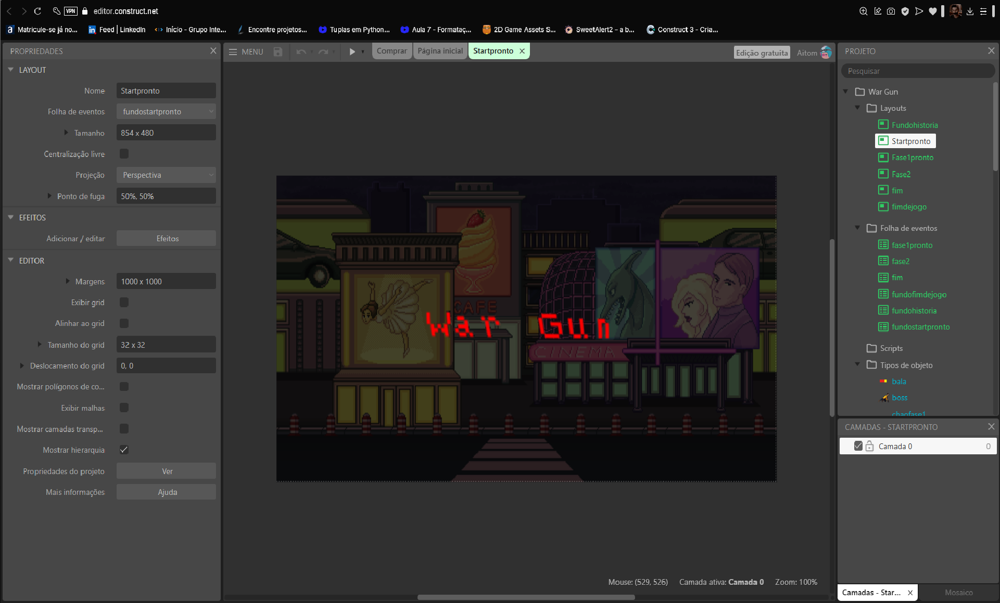
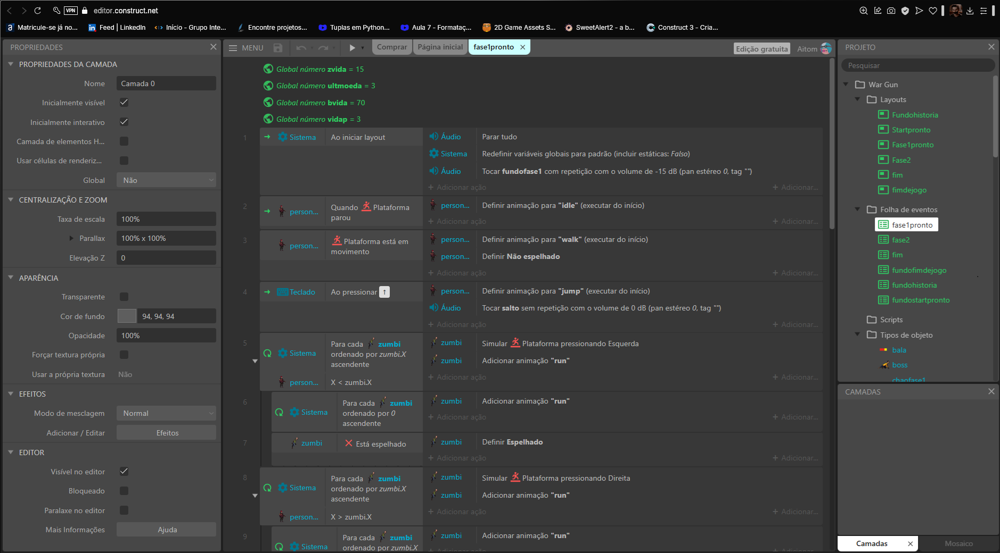

A conclusão do jogo levou cerca de 2 a 3 semanas, desde a escolha de sprites e temas até os últimos ajustes necessários para que tudo funcionasse corretamente: sprites, sons, etc.
Essa é uma imagem do próprio projeto do jogo, mostrando toda a programação por trás das telas de início, fases e muito mais. Tudo sendo apresentado de forma clara.
Meu nome é Aitom Henrique Donatoni,tenho 22 anos,atualmente trabalho com agricultura familiar, estou na faculdade para aprender sobre programação,por ser um assunto de meu interesse e estar em alta no mercado atual.